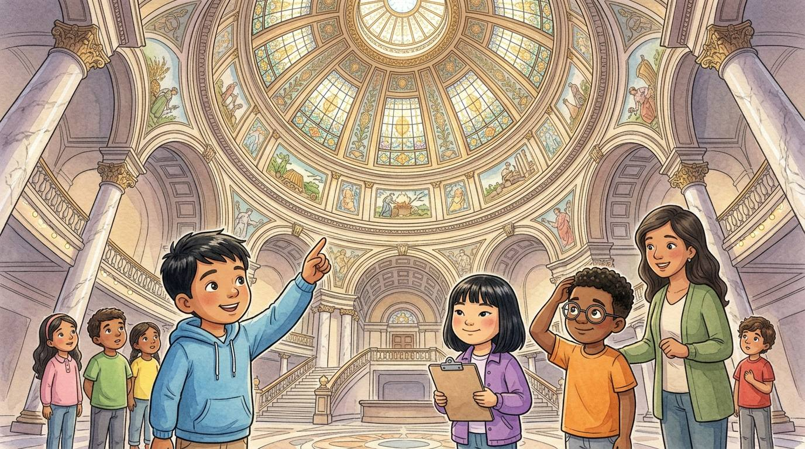

4to grado · Estudios sociales · SS.4.CV.1 · SS.4.CV.3
Tres poderes bajo una cúpula
Un cuento sobre cómo se reparte el trabajo del gobierno de Illinois.
Palabras de estudios sociales que vas a aprender
Toca una palabra verde para ver qué significa.
El cuento
El autobús de la escuela salió de Chicago muy temprano. Unas tres horas y media después, Israel pegó la nariz a la ventana. —¡Miren esa cúpula! —gritó. Era el de Illinois, en Springfield, la capital del estado.
Adentro, todos echaron la cabeza hacia atrás para ver el techo, altísimo y lleno de colores. Daniel se mareó un poquito. —Es la primera vez que un edificio me marea —dijo, y todos se rieron.
La maestra Rivera reunió a la clase en un pasillo. —La de Illinois es el plan del gobierno del estado —explicó—. Dice que el trabajo se reparte en tres poderes, para que ninguno tenga todo el poder. —El plan también puede cambiar con el tiempo —añadió—. Illinois ha tenido cuatro constituciones, de 1818, 1848, 1870 y 1970, y cada una cambió la manera de organizar el trabajo del gobierno.
Primero visitaron la galería de la Asamblea General. —Este es el —dijo la maestra—. Aquí, los legisladores que elige la gente de todo el estado escriben y votan las leyes. Tiene dos partes: el Senado y la Cámara de Representantes.
Sophia descubrió un tablero con lucecitas verdes y rojas. Ese día, los legisladores votaban un : una idea que todavía no es ley. —Verde es sí y rojo es no —susurró Sophia. —Si gana el sí en las dos cámaras, el proyecto pasa al gobernador —añadió la maestra.
El gobernador dirige el : hace que las leyes se cumplan, y puede firmar un proyecto para que sea ley o . Aun así, a veces los legisladores pueden volver a votar y aprobar el proyecto a pesar del veto. Su oficina estaba en ese mismo edificio.
Después caminaron hasta un edificio cercano, serio y elegante: la Corte Suprema de Illinois. —Este es el —explicó la maestra—. Los jueces deciden casos y explican qué quieren decir las leyes cuando hay desacuerdos.
En el autobús de regreso, Israel dibujó un triángulo. En cada esquina escribió: «hacen las leyes», «hacen que se cumplan», «explican las leyes». —Cada poder vigila a los otros —dijo—. Es como en un juego: unos escriben las reglas, otro hace que todos las sigan y el árbitro decide cuando hay una discusión.
—Y no olviden los niveles de gobierno —añadió la maestra—: el alcalde dirige la ciudad, el gobernador dirige el estado y el presidente dirige el país. Cada nivel tiene su propio trabajo.
Daniel miró por la ventana los campos de maíz. —Ya sé qué voy a ser de grande —dijo—: senador del estado. Pero primero voy a terminar mi tarea.
Glosario
- capitolio
- El edificio donde trabajan los legisladores de un estado o de un país. El de Illinois está en Springfield.
- constitución
- El plan escrito de un gobierno: dice cómo se organiza y cuáles son los derechos de las personas.
- poder legislativo
- La parte del gobierno que escribe y vota las leyes. En Illinois se llama Asamblea General.
- proyecto de ley
- Una idea para una ley nueva que todavía se está votando.
- poder ejecutivo
- La parte del gobierno que hace que las leyes se cumplan. En Illinois la dirige el gobernador.
- vetar
- Rechazar un proyecto de ley para que no se convierta en ley. A veces los legisladores pueden volver a votar y aprobarlo a pesar del veto.
- poder judicial
- La parte del gobierno formada por las cortes y los jueces, que deciden casos y explican las leyes.
Preguntas
Elige la respuesta correcta. Si te equivocas, el cuento te muestra dónde está la respuesta.
-
Pregunta A. ¿Por qué el trabajo del gobierno de Illinois se reparte en tres poderes?
La Constitución reparte el trabajo en tres poderes para que ninguno tenga todo el poder.
-
Pregunta B. ¿Qué hace el poder legislativo?
En el poder legislativo, los legisladores escriben y votan las leyes.
-
Pregunta C. ¿Qué puede hacer el gobernador con un proyecto de ley?
El gobernador puede firmar un proyecto para que sea ley o vetarlo.
-
Pregunta D. ¿Qué hacen los jueces del poder judicial?
Los jueces deciden casos y explican qué quieren decir las leyes.
-
Pregunta E. ¿Quién dirige el gobierno del estado de Illinois?
El gobernador dirige el estado; el alcalde, la ciudad, y el presidente, el país.
Reto: explica tu razonamiento
Defiende tu idea
Quieres una nueva ley del estado que agregue más carriles para bicicletas. ¿A quién deberías escribirle primero: a un juez, al gobernador o a un legislador del estado? Explica tu respuesta con lo que hace cada poder.
Responde en tu cuaderno o coméntalo con un compañero. Usa evidencias del cuento.
Revisa tu idea
A un legislador del estado, porque el poder legislativo escribe las leyes y las vota. Si el proyecto se aprueba, el gobernador puede firmarlo para que sea ley. Un juez decide casos y explica las leyes, pero no escribe leyes nuevas.